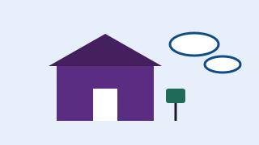

Il primo sensore è acceso
La classe 3B ha montato il primo sensore davanti alla scuola. Ora trasmette ogni ora.
Venti sensori costruiti con le classi e una mappa pubblica dei dati, aggiornata ogni ora.
Gruppo Aria Aperta · Dipartimento di Informatica, Università di Torino
Responsabile scientifico: Karim Benali

Le centraline ufficiali sono poche e lontane dalle scuole. Eppure è lì che bambini e ragazzi passano gran parte della giornata.
Il gruppo Aria Aperta costruirà con dieci classi venti sensori a basso costo, con software e progetti liberi, e li installerà vicino agli ingressi delle scuole. I dati saranno su una mappa pubblica.
Tutto il materiale sarà disponibile in italiano e in inglese, perché altre città possano replicare il progetto.
| Voce di spesa | Importo |
|---|---|
| 20 sensori di particolato e NO₂ | € 2.400 |
| Schede e contenitori stampati in 3D | € 900 |
| Server e mappa pubblica per un anno | € 700 |
| Laboratori con le classi | € 1.000 |
| Totale (obiettivo) | € 5.000 |
Scegli una ricompensa oppure una donazione libera. Gli importi indicati sono minimi: puoi sempre donare di più.
La classe 3B ha montato il primo sensore davanti alla scuola. Ora trasmette ogni ora.
I commenti sono pubblicati nella lingua in cui sono stati scritti.
Amina H. · · Commento in inglese
Donated from Beirut. Could the sensor kit be shipped abroad?
Prof. Ricci ·
La nostra scuola è interessata al laboratorio.
Alcuni dei sostenitori che hanno scelto di mostrare il nome:
Fabio D., Martina A., Paolo F., Chiara N., Giorgio E., Luisa C., Davide S., Valentina R. e altre 71 persone, alcune in forma anonima.
Le date delle campagne in corso sono dimostrative: vengono calcolate a partire da oggi.